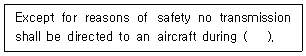
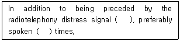
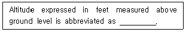
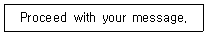
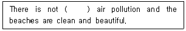
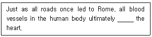
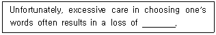
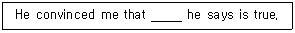
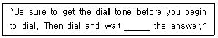

항공무선통신사 (2015-10-04 기출문제)
1과목: 전파법규
1. 다음 중 전파법에서 규정하는 시설자의 정의로 맞는 것은?
- 무선국의 허가를 신청하는 자
- 무선설비를 조작하고 운용하는 자
- 미래창조과학부장관으로부터 기술자격증을 받은 자
- 미래창조과학부장관으로부터 무선국의 개설허가를 받거나 개설신고를 하고 무선국을 개설한 자
(정답률: 82%)

2. 시설자가 무선국의 무선설비를 타인에게 임대하고자 할 때 미래창조 과학부장관에게 제출하여야 하는 서류는?
- 무선설비 임대승인신청서
- 무선설비 임태차계약서
- 무선설비 임대사실확인서
- 무선설비 임대요청서
(정답률: 80%)
3. 항공기용 구명무선설비의 공중선전력의 허용편차로 맞는 것은?
- 상한 50[％] 하한 20[％]
- 상한 50[％] 하한 50[％]
- 상한 10[％] 하한 20[％]
- 상한 20[％] 하한 20[％]
(정답률: 76%)
4. 대가할당 받은 주파수의 경우 미래창조과학부장관은 주파수의 이용여건 등을 고려하여 얼마의 범위내에서 이용기간을 정하여 고시하는가?
- 3년
- 10년
- 20년
- 30년
(정답률: 47%)
5. 다음 중 항공기국이 무선전화통신으로 무선방향탐지국에 대하여 방위측정용 부호를 송신하고자 하는 경우 송신순서로 맞는 것은?
- 자국의 호출부호 – 각 10초간의 2선 – 자국의 호출부호
- 상대국의 호출부호 – 각 10초간의 2선 – 자국의 호출부호
- 자국의 호출부호 – 각 20초간의 2선 – 상대국의 호출부호
- 상대국의 호출부호 – 각 20초간의 2선 – 자국의 호출부호
(정답률: 66%)
6. 다음 중 무선측위업무가 아닌 것은?
- 무선방향탐지업무
- 무선항행업무
- 표준주파수업무
- 무선탐지업무
(정답률: 79%)
7. 주파수할당을 받은 자가 주파수이용기간이 만료되어 주파수재할당을 받으려면 주파수이용기간 만료 몇 개월 전에 신청하여야 하는가?
- 1개월
- 2개월
- 6개월
- 8개월
(정답률: 68%)
8. 의무항공기국의 무선설비 성능유지를 확인하여야 하는 주기로 옳은 것은?
- 500시간 사용할 때 마다 1회 이상 확인
- 1,000시간 사용할 때 마다 1회 이상 확인
- 1,500시간 사용할 때 마다 1회 이상 확인
- 2,000시간 사용할 때 마다 1회 이상 확인
(정답률: 86%)
9. 항공국의 허가유효기간 만료일 도래 시 재허가 신청기간은?
- 허가의 유효기간 만료 전 1개월 이상 2개월 이내
- 허가의 유효기간 만료 전 1개월 이상 4개월 이내
- 허가의 유효기간 만료 전 2개월 이상 4개월 이내
- 허가의 유효기간 만료 전 2개월 이상 6개월 이내
(정답률: 64%)
10. 항공고정업무국의 운용에서 수신상태의 불량으로 통신연락을 설정할 수 없는 경우에 통신연락을 설정하기 위하여 수송방식에 의해 송신하는 방법으로 올바른 것은?
- “O” 적의 연속 – 자국의 호출부호 1회
- “S” 적의 연속 – 자국의 호출부호 1회
- “V” 적의 연속 – 자국의 호출부호 1회
- “X” 적의 연속 – 자국의 호출부호 1회
(정답률: 62%)
11. 항공고정업무국의 운용에 있어 ‘통보의 구성’ 요소가 아닌 것은?
- 통보의 우선순위
- 수신부서명
- 발신부서명
- 상대국의 식별표지
(정답률: 71%)
12. 다음 중 한국방송통신전파진흥원에서 검사를 실시하는 무선국이 아닌 것은?
- 한국방송공사 소속 고정국
- 소방서 소속 육상이동국
- 공기업 소속 고정국
- 이동통신사업자 이동중계국
(정답률: 60%)
13. 다음 중 운용의무시간 외에 의무항공기국을 운용할 수 있는 경우가 아닌 것은?
- 통신연락 수단이 없는 경우 긴급한 통보를 항공이동업무국에 송신하는 경우
- 무선국 검사에 필요한 경우
- 항행 준비 중인 경우
- 항공기 보안사무에 관한 통신을 하는 경우
(정답률: 65%)
14. 수색구조에 종사하는 항공기에 있어서 장거리 취항 비행을 행하는 항공기국이 사용하는 주파수로 맞는 것은?
- 108[MHz]
- 156.8[MHz]
- 156.252[MHz]
- 243.0[MHz]
(정답률: 75%)
15. 기술자격검정에 관하여 부정행위가 있을 때에 부정행위자에 대하여 취할 수 있는 제재 조치가 아닌 것은?
- 당해 행위자에 대하여 그 검정을 정지함
- 당해 행위자에 대하여 합격을 무효로 함
- 당해 행위자에 대하여 벌금을 부과함
- 기간을 정하여 기술자격검정을 받지 못하게 함
(정답률: 78%)
16. 항공기국이 해상이동업무를 하는 무선국과 통신할 경우 통상 어느 업무와 관련된 규정에 따라야 하는가?
- 항공이동업무의 규정
- 해상이동업무의 규정
- 이동업무에 대한 국제 규정
- 국제민강항공 관련 규정
(정답률: 66%)
17. 국제전파규칙(RR)에서 규정한 무선전화의 안전신호는?
- PAN
- MAYDAY
- SAFETY
- SECURITE
(정답률: 69%)
18. 다음 중 RR에서 규정하는 무선전화통신사 자격증에 해당하는 것은?
- 무선전화통신사 임시자격증
- 무선전화통신사 일반자격증
- 무선전화통신사 1급 자격증
- 무선전화통신사 2급 자격증
(정답률: 81%)
19. 항공기의 운행업무에 제공되는 무선국의 무선설비 기능에 장해를 주어 무선통신을 방해한 자에 대한 벌칙은?
- 1년 이하의 징역
- 3년 이하의 징역 또는 2,000만원 이하의 벌금
- 5년 이하의 징역 또는 3,000만원 이하의 벌금
- 10년 이하의 징역 또는 1억원 이하의 벌금
(정답률: 56%)
20. 「대한민국 헌법」 또는 「대한민국 헌법」에 따라 설치된 국가기관을 폭력으로 파괴할 것을 주장하는 통신을 한 자에 대한 벌칙은?
- 3년 이하의 징역 또는 1,000만원 이하의 벌금
- 1년 이상 15년 이하의 징역
- 5년 이하의 징역 또는 5,000만원 이하의 벌금
- 5년 이상의 징역 또는 금고
(정답률: 76%)
2과목: 기초전파공학
21. 다음 중 주로 고주파 증폭회로에 사용되는 방식은?
- 에미터 접지 증폭회로
- 베이스 접지 증폭회로
- 콜렉터 접지 증폭회로
- 에미터 폴로워 증폭회로
(정답률: 29%)
22. 주파수 체배시 가장 많이 쓰는 증폭방식은?
- A급
- B급
- C급
- D급
(정답률: 60%)
23. 항공기내 인터넷 서비스 시스템 중 기내에서 무선LAN 접속 시 IEEE 802.11n을 지원하지 않는 네트워크 인터페이스 기술기준은?
- IEEE 802.11
- IEEE 802.11a
- IEEE 802.11g
- IEEE 802.11k
(정답률: 48%)
24. 일반적으로 공항부근에 국한되는 짧은 범위를 Cover하는 시설로서 Approach Control, Departure Control 및 공항부근에 있는 항공기의 Vectoring에 이용되는 시설은? (단, 고도정보는 얻을 수 없다.)
- ASR
- SSR
- PAR
- ASDE
(정답률: 50%)
25. 항공기의 항법설비 중 거리측정장치(DME)에 대한 설명으로 틀린 것은?
- DME는 지상국과의 거리를 측정하는 장치이다.
- 수신된 정현파의 도래시간을 측정하여 현재의 위치를 알아낸다.
- 응답 주파수는 960[MHz] ~ 1,215[MHz]이다.
- 항공기에서 발사된 질문펄스와 지상 응답펄스간의 도래시간을 계산하여 거리를 측정한다.
(정답률: 37%)
26. 다음 항공기의 무선, 항법, 위성설비 중 항공기에서 전파를 발사하지 않는 설비는?
- HF, WX-Radar
- DME, Radar
- DME, LRRA
- ADF, VOR
(정답률: 57%)
27. 다음 중 항법시설용 초단파(VHF) Marker Beacon의 기술기준으로 잘못된 것은?
- 외측마아커의 변조 주파수는 400[Hz]±10[Hz]이어야 한다.
- 변조도는 91[％] 이상 99[％] 이하이어야 한다.
- 내측마아커의 변조 주파수는 3,000[Hz]±75[Hz]이어야 한다.
- 전파의 발사는 반드시 원 편파만 사용하여야 한다.
(정답률: 56%)
28. DME Transponder는 대략 몇 대의 항공기에 대하여 동시에 응답할 수 있는가?
- 약 100대
- 약 200대
- 약 500대
- 무한대
(정답률: 51%)
29. 다음중 10진수 (10.375)10를 2진수로 올바르게 변환한 것은?
- (1011.111)2
- (1010.111)2
- (1010.011)2
- (1011.011)2
(정답률: 50%)
30. 다음 중 이동통신에서 타채널 간섭을 방지하기 위한 가장 효과적인 방법은?
- 기지국수 제어
- 이동국수 제어
- 전력 제어
- 송수신 안테나수 제어
(정답률: 37%)
31. 다음 중 송신기의 성능조건으로 적절하지 않은 것은?
- 송신되는 주파수는 유동적이어야 한다.
- 스퓨리어스 발사의 강도는 가능한 적어야 한다.
- 변조 직진성이 좋아야 한다.
- 신호파에 대한 변조도의 주파수 특성이 좋아야 한다.
(정답률: 41%)
32. 항공기가 진침로(TH)090° 비행시, ADF를 이용하여 상대방위를 측정하여 060°를 얻었다. 이 때 항공기의 국(Station)에 대한 진방위각은 얼마인가?
- 030°
- 150°
- 075°
- 110°
(정답률: 63%)
33. 가동 코일형의 계기눈금은?
- 균등하다.
- 대수형이다.
- 제곱형이다.
- 지수형이다.
(정답률: 56%)
34. 단일시설로 운영되는 거리측정시설(DME)의 식별부호는?
- 1 ~ 2개 문자로 구성된 국내 모르스 부호를 사용한다.
- 2 ~ 3개 문자로 구성된 국제 모르스 부호를 사용한다.
- 3 ~ 4개 문자로 구성된 국내 모르스 부호를 사용한다.
- 4 ~ 5개 문자로 구성된 국제 모르스 부호를 사용한다.
(정답률: 56%)
35. 원형도파관의 통과 주파수는 무엇에 의해 결정되는가?
- 도파관의 내부지름
- 도파관의 길이
- 도파관의 무게
- 도파관의 부피
(정답률: 57%)
36. 항공기내 인터넷 설비의 안테나로 사용 가능한 것은?
- Yagi Antenna
- Cassegrain Antenna
- Dummy Load Antenna
- Folded Dipole Antenna
(정답률: 45%)
37. 다음 중 전리층반사나 지표파를 이용하지 않고 주로 직접파를 이용하는 주파수대는?
- 중파
- 중단파
- 단파
- 초단파
(정답률: 50%)
38. 전리층 중 일반적으로 지상으로부터 가장 높고, 단파통신에 주로 이용되는 층은?
- D층
- E층
- F층
- 스포라딕 E층
(정답률: 48%)
39. 옴(Ohm)의 법칙을 바르게 설명한 것은?
- 전기저항은 도선의 길이에 반비례한다.
- 전기저항은 도선의 단면적에 반비례한다.
- 전기저항은 도선의 길이와는 무관하다.
- 전기저항은 도선의 단면적에 비례한다.
(정답률: 57%)
40. 4[Ω]의 저항에 20[A]의 전류가 흘렀을 때 소비된 전력은?
- 5 [W]
- 80 [W]
- 320 [W]
- 1,600 [W]
(정답률: 26%)
3과목: 통신보안
41. 전파법령에서 규정하고 있는 “통신보안 준수사항”의 정의로 알맞은 것은?
- 무선국의 운용, 감독 및 관리 등 통신 전반에 대한 책임자의 준수사항
- 비밀이 직접 또는 간접적으로 누설되는 것을 미리 방지하거나 지연시키기 위한 방책
- 선박국의 무선종사자가 지켜야 할 통신운용에 관한 사항
- 무선국을 운용할 때 지켜야 할 통신보안에 관한 사항
(정답률: 49%)
42. 다음 중 통신보안담당관의 임명 및 임무에 관한 사항으로 옳지 않은 것은?
- 보안담당관은 각급 기관에서 임명한다.
- 중앙전파관리소장이 각극 기관의 보안담당관을 임명한다.
- 보안담당관은 자체 보안업무를 관리한다.
- 보안담당관은 비밀소유현황 조사를 한다.
(정답률: 51%)
43. 지리적 여건상 우리나라는 무선통신의 보안상 상당히 불리한 조건하에 있는 실정이다. 다음 중 지정학적 측면을 고려할 때 통신보안의 취약성과 관련이 가장 적은 것은?
- 북쪽-북한
- 서쪽-중국
- 동쪽-일본
- 남쪽-호주
(정답률: 62%)
44. 다음 중 통신보안 측면에서 전기통신의 특징으로 잘못된 것은?
- 전기통신은 제반 통신수단 중 가장 편리하지만 통신보안대책이 필요하다.
- 원거리까지 의사전달이 가능하므로 타 통신수단보다 보안성이 낮다.
- 통신형태에 따른 별도의 통신보안대책이 필요하다.
- 초단파 이상은 근거리통신만 가능하므로 별도의 통신보안대책은 필요 없다.
(정답률: 60%)
45. 다음 중 암호자재의 배부·반납에 대한 사항으로 알맞은 것은?
- 암호자재는 신분증이 있는 자에 한하여 배부한다.
- 예비용 암호자재는 사용기관까지 72시간 내에 배부하여 한다.
- 사용기간이 끝난 암호자재를 지체 없이 제작기관에 반납하여야 한다.
- 암호자재는 배부, 반납, 파기 또는 오인소각에 대한 증명은 필요하지 않다.
(정답률: 42%)
46. 통신도청과 통신감청의 차이점으로 가장 적절한 것은?
- 통신도청은 비합법적이고 통신감청은 합법적이다.
- 통신도청은 합법적이고 통신감청은 비합법적이다.
- 통신감청은 누구나 할 수 있다.
- 통신도청은 비밀보호 관련법령과 무관하다.
(정답률: 58%)
47. 다음 중 통신보안을 요하는 사항의 취급방법으로 알맞는 것은?
- 보안책임자에게 보고하지 않는다.
- 텔렉스로 통신한다.
- 통신보안용 약호자재를 사용한다.
- 보안책임자가 직접 평문교신한다.
(정답률: 59%)
48. 다음 중 약호자재의 긴급파기에 대한 설명으로 옳지 않은 것은?
- 암호자재의 긴급파기 계획은 평상시에 수립되어 있어야 한다.
- 사용 중인 암호자재를 계속 보유할 수 없을 때에는 배부처가 적은 것부터 파기한다.
- 긴급사태 발생하였을 때 사용기간이 끝난 암호자재, 예비용 암호자재 및 사용 중인 암호자재 순으로 파기한다.
- 암호자재를 관리·운용하는 사람은 긴급사태 발생으로 암호자재를 안전하게 보호할 수 없는 경우에는 파기할 수 있다.
(정답률: 46%)
49. 약호자재를 분실한 경우 우선적으로 취해야 할 조치로 가장 적절한 것은?
- 자체적으로 대책을 수립
- 관계기관에 신고하여 적절한 보안대책 강구
- 가까운 경찰관서에 신고
- 부서장에게 보고하고 그 지시에 따름
(정답률: 59%)
50. 다음 중 통신보안용 보안자재에 속하지 않는 것은?
- 암호
- 음어
- 약어
- 약호
(정답률: 55%)
4과목: 영어
51. 다음 중 관제기관과 해당 관제기관 호출부호에 사용하는 접미사가 적절히 연결된 것은?
- Area ControlCenter – Center
- Approach Control – Control
- Aeronautical Station – Radar
- Company Dispatch – Dispatch
(정답률: 65%)
52. 다음 문장의 괄호 안에 들어갈 내용으로 맞지 않는 것은?

- starting engine
- take-off
- the last part of the final approach
- the landing roll
(정답률: 61%)
53. 다음 괄호 안에 적절한 내용으로 짝지어진 것은?

- pan pan, two
- pan pan, three
- mayday, two
- mayday, three
(정답률: 56%)
54. 조난 중인 항공기를 관제하는 기관에서 기타 무선국의 무선침묵을 지시할 때 사용되는 표현으로 가장 적절한 것은?
- Stop Transmitting
- Break Break
- Keep Silence
- Stand By
(정답률: 74%)
55. 항공무선 통신에서 고도계 수정치 ‘29.92’를 송신할 때 맞는 것은?(오류 신고가 접수된 문제입니다. 반드시 정답과 해설을 확인하시기 바랍니다.)
- Two nine point nine two
- Two niner niner two
- Twenty nine decimal ninety two
- Twenty nine ninety two
(정답률: 35%)
56. 다음 문장의 밑줄 친 부분에 들어갈 내용으로 알맞은 것은?(오류 신고가 접수된 문제입니다. 반드시 정답과 해설을 확인하시기 바랍니다.)

- MSL
- QNH
- QFE
- AGL
(정답률: 35%)
57. 다음 중 용어의 기능이 가장 적합하게 설명된 것은?
- “DME” providing only azimuth information.
- “TACAN” providing only distance information.
- “DME” providing distance and azimuth information.
- “TACAN” providing distance and azimuth information.
(정답률: 63%)
58. 약어 ‘CAVOK’의 의미와 발음을 가장 적절하게 설명한 것은?
- No precipitation, KA-VOK
- No Precipitation, KAV-OH-KAY
- Visibility, cloud and present weather better than prescribed values, KA-VOK
- Visibility, cloud and present weather better than prescribed values, KAV-OH-KAY
(정답률: 64%)
59. 특정 지시나 허가, 요청을 따를 수 없을 때 사용하는 항공관제 용어는?
- WHEN ABLE
- UNABLE
- NEGATIVE
- NEGATIVE CONTACT
(정답률: 70%)
60. 항공무선 교신에서 “나의 송신에 대한 상대국의 수신상태를 파악”하기 위해 질문하는 용어는?
- Advise me your receiving level.
- Report your receiving condition.
- What is your listening status?
- How do you read me?
(정답률: 78%)
61. 항공통신용어 중 “현재 사용하고 있는 주파수를 유지할 것”을 요구할 때 사용되는 것은?
- Remain this frequency
- Keep this frequence
- Hold this frequency
- Do not leave this frequency
(정답률: 77%)
62. 다음은 어떤 용어에 대한 설명인가?

- Approved
- Contact
- Go Ahead
- Say Again
(정답률: 78%)
63. What is a definition of “ROGER”in aviation radio phrase?
- I have received all of your last transmission.
- My transmission is ended and I expect a response from you.
- Let me know that you have received and understand this message.
- This conversation is ended and no response is expected.
(정답률: 80%)
64. 다음 영문 통화표의 약어 발음방법으로 틀린 것은?
- A : ALFAH
- O : OSSCAH
- S : SEE EIRRAH
- X : ECKSRAY
(정답률: 69%)
65. 다음 문장의 괄호 안에 들어갈 가장 적절한 단어는?

- more
- most
- many
- much
(정답률: 77%)
66. 다음 보기의 문장 중 뜻이 다른 하나의 문장은 어느 것인가?
- A child of five would understand it.
- A five-year-old child would understand it.
- A five-year-old child would know it.
- A child is five-year-old, but he understand it.
(정답률: 62%)
67. 다음 문장의 빈칸에 들어갈 가장 적절한 단어는?

- detour around
- look after
- shut off
- empty into
(정답률: 64%)
68. 다음 문장의 밑줄 친 부분에 들어갈 가장 적절한 단어는?

- precision
- atmosphere
- selectivity
- spontaneity
(정답률: 50%)
69. 다음 문장의 밑줄 친 부분에 들어갈 알맞은 것은?

- that
- what
- who
- which
(정답률: 76%)
70. 다음 문장의 밑줄 친 곳에 들어갈 가장 알맞은 것은?

- in
- on
- for
- up
(정답률: 82%)